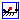

Library Modelica.Fluid is a free Modelica package providing components for 1-dimensional thermo-fluid flow in networks of vessels, pipes, fluid machines, valves and fittings. A unique feature is that the component equations and the media models as well as pressure loss and heat transfer correlations are decoupled from each other. All components are implemented such that they can be used for media from the Modelica.Media library. This means especially that an incompressible or compressible medium, a single or a multiple substance medium with one or more phases might be used.
In the next figure, several features of the library are demonstrated with a simple heating system with a closed flow cycle. By just changing one configuration parameter in the system object the equations are changed between steady-state and dynamic simulation with fixed or steady-state initial conditions.
With respect to previous versions, the design of the connectors has been changed in a non-backward compatible way, using the recently developed concept of stream connectors that results in much more reliable simulations (see an overview and a rationale here). This extension was included in Modelica 3.1. As of Jan. 2009, the stream concept is supported in Dymola 7.1. It is recommended to use Dymola 7.2 (available since Feb. 2009), or a later Dymola version, since this version supports a new annotation to connect very conveniently to vectors of connectors. Other tool vendors will support the stream concept as well.
The following parts are useful, when newly starting with this library:
Licensed by the Modelica Association under the Modelica License 2
Copyright © 2002-2009, ABB, DLR, Dynasim, Modelon, TU Braunschweig, TU Hamburg-Harburg, Politecnico di Milano.
This Modelica package is free software and the use is completely at your own risk; it can be redistributed and/or modified under the terms of the Modelica license 2, see the license conditions (including the disclaimer of warranty) here or at http://www.Modelica.org/licenses/ModelicaLicense2.
Extends from Modelica.Icons.Library (Icon for library).
| Name | Description |
|---|---|
| Users Guide | |
| Demonstration of the usage of the library | |
|  System | System properties and default values (ambient, flow direction, initialization) |
| Devices for storing fluid | |
| Devices for conveying fluid | |
| Devices for converting between energy held in a fluid and mechanical energy | |
| Components for the regulation and control of fluid flow | |
| Adaptors for connections of fluid components and the regulation of fluid flow | |
| Define fixed or prescribed boundary conditions | |
| Ideal sensor components to extract signals from a fluid connector | |
| Interfaces for steady state and unsteady, mixed-phase, multi-substance, incompressible and compressible flow | |
| Common types for fluid models | |
| Utility models to construct fluid components (should not be used directly) | |
A system component is needed in each fluid model to provide system-wide settings, such as ambient conditions and overall modeling assumptions. The system settings are propagated to the fluid models using the inner/outer mechanism.
A model should never directly use system parameters. Instead a local parameter should be declared, which uses the global setting as default. The only exception currently made is the gravity system.g.
| Type | Name | Default | Description |
|---|---|---|---|
| Environment | |||
| AbsolutePressure | p_ambient | 101325 | Default ambient pressure [Pa] |
| Temperature | T_ambient | 293.15 | Default ambient temperature [K] |
| Acceleration | g | Modelica.Constants.g_n | Constant gravity acceleration [m/s2] |
| Assumptions | |||
| Boolean | allowFlowReversal | true | = false to restrict to design flow direction (port_a -> port_b) |
| Dynamics | |||
| Dynamics | energyDynamics | Modelica.Fluid.Types.Dynamic... | Default formulation of energy balances |
| Dynamics | massDynamics | energyDynamics | Default formulation of mass balances |
| Dynamics | momentumDynamics | Modelica.Fluid.Types.Dynamic... | Default formulation of momentum balances, if options available |
| Initialization | |||
| MassFlowRate | m_flow_start | 0 | Default start value for mass flow rates [kg/s] |
| AbsolutePressure | p_start | p_ambient | Default start value for pressures [Pa] |
| Temperature | T_start | T_ambient | Default start value for temperatures [K] |
| Advanced | |||
| MassFlowRate | m_flow_small | 0.01 | Default small laminar mass flow rate for regularization of zero flow [kg/s] |
| AbsolutePressure | dp_small | 1 | Default small pressure drop for regularization of laminar and zero flow [Pa] |
model System
"System properties and default values (ambient, flow direction, initialization)"
package Medium = Modelica.Media.Interfaces.PartialMedium
"Medium model for default start values";
parameter Modelica.SIunits.AbsolutePressure p_ambient=101325
"Default ambient pressure";
parameter Modelica.SIunits.Temperature T_ambient=293.15
"Default ambient temperature";
parameter Modelica.SIunits.Acceleration g=Modelica.Constants.g_n
"Constant gravity acceleration";
// Assumptions
parameter Boolean allowFlowReversal = true
"= false to restrict to design flow direction (port_a -> port_b)";
parameter Modelica.Fluid.Types.Dynamics energyDynamics=
Modelica.Fluid.Types.Dynamics.DynamicFreeInitial
"Default formulation of energy balances";
parameter Modelica.Fluid.Types.Dynamics massDynamics=
energyDynamics "Default formulation of mass balances";
final parameter Modelica.Fluid.Types.Dynamics substanceDynamics=
massDynamics "Default formulation of substance balances";
final parameter Modelica.Fluid.Types.Dynamics traceDynamics=
massDynamics "Default formulation of trace substance balances";
parameter Modelica.Fluid.Types.Dynamics momentumDynamics=
Modelica.Fluid.Types.Dynamics.SteadyState
"Default formulation of momentum balances, if options available";
// Initialization
parameter Modelica.SIunits.MassFlowRate m_flow_start = 0
"Default start value for mass flow rates";
parameter Modelica.SIunits.AbsolutePressure p_start = p_ambient
"Default start value for pressures";
parameter Modelica.SIunits.Temperature T_start = T_ambient
"Default start value for temperatures";
// Advanced
parameter Modelica.SIunits.MassFlowRate m_flow_small(min=0) = 0.01
"Default small laminar mass flow rate for regularization of zero flow";
parameter Modelica.SIunits.AbsolutePressure dp_small(min=0) = 1
"Default small pressure drop for regularization of laminar and zero flow";
end System;